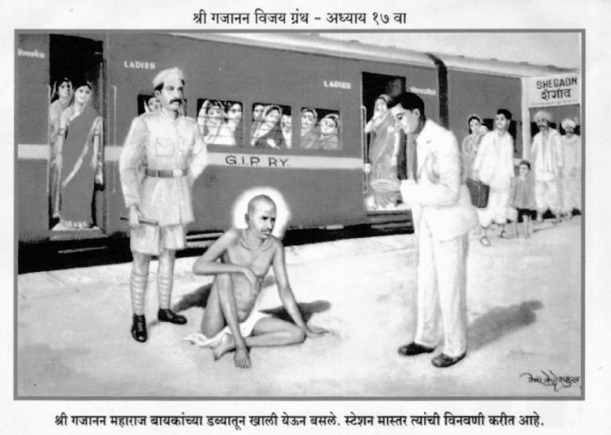

॥ अध्याय १७॥

॥ श्रीगणेशाय नमः ॥
जयजयाजी महामंगला ।
जयजयाजी भक्तपाला ।
जयजयाजी तमालनीला ।
पतितपावन नरहरे ॥१॥
हिरण्यकश्यपु महाक्रूर ।
सज्जनाचा शत्रू थोर ।
तयाचें तूं फाडून उदर ।
मरण त्याचें साधिलें ॥२॥
प्रल्हादरक्षणासाठीं ।
तूं जन्मलास स्तंभापोटीं ।
रुप अनुपम जगजेठी ।
धारण तें करुन ॥३॥
दांत दाढा भयंकर ।
आयाळ रुळे मानेवर ।
नेत्र जेवीं खदिरांगार ।
ब्रह्मांड जाळूं पहाती ॥४॥
त्या भयंकर रुपाची ।
भीति नसे साची ।
पिलें जेवीं वाघिणीचीं ।
अंगावर खेळती तिच्या ॥५॥
तुम्हां पाहून देवराया ।
लक्ष्मी न धजे पुढें यावया ।
ऐशा स्थितींत लागला पाया ।
भक्त तुझा नरहरे ॥६॥
तूं भक्तवत्सल लक्ष्मीकांत ।
ऐसें सांगत आले संत ।
पुरविशी भक्तमनोरथ ।
नाहीं न त्यासी म्हणसी कदा ॥७॥
त्या आपुल्या ब्रीदासी ।
जाग आतां हृषीकेशी ।
दासगणू लागला पायांसी ।
अभय असूं दे पांडुरंगा ॥८॥
गजाननाचे परम भक्त ।
होते कांहीं अकोल्यांत ।
तयाचीया सदनाप्रत ।
हमेशा यावें समर्थांनीं ॥९॥
चापडगांवचे बापु कृष्ण ।
खटाऊ शेटचें कुटुंब जाण ।
गोडू लालाचा नंदन ।
बच्चुलाल नाम ज्याचें ॥१०॥
जीजीबाई पंडित ।
आणीकही होते बहुत ।
त्यांचीं नांवें तुम्हांप्रत ।
किती सांगूं विबुध हो ॥११॥
एके वेळीं अकोल्यांत ।
आले गजानन स्वामी समर्थ ।
खटाऊच्या गिरणींत ।
मुक्काम त्यानें ठेविला ॥१२॥
एक भक्त मलकापुरीं ।
विष्णूसा नामें निर्धारी ।
त्याच्या वाटलें अंतरीं ।
समर्थ आणावें मलकापुरा ॥१३॥
त्यानें आमंत्रणाचा वशिला ।
भास्कराच्या द्वारें लाविला ।
हाच भास्कर होता झाला ।
समाधिस्थ अडगांवीं ॥१४॥
तो त्या वेळीं होता जवळ ।
करी कारभार अंगें सकळ ।
विष्णूसाला होतें बळ ।
याच भास्कर पाटलाचें ॥१५॥
भास्कर म्हणे मलकापुरीं ।
चला समर्था लवकरी ।
भक्त विष्णूसाच्या घरीं ।
बोलावण्यास आला तो ॥१६॥
मनोरथ येथील भक्तांचे ।
तुम्हीं पुरविले असती साचे ।
आतां मलकापुरीचे ।
लोक वाट पहाती ॥१७॥
तईं समर्थ म्हणाले भास्करा ।
सध्यांच मी मलकापुरा ।
येत नाहीं जाण खरा ।
तूं आग्रह करुं नको ॥१८॥
फार आग्रह करशील ।
तरी फजीत पावशील ।
याचा विचार करी खोल ।
मी न बोललों कांहीं तरी ॥१९॥
दोरीसी दिधल्या फार ताण ।
ती मध्येंच तुटतसे जाण ।
मी न हलणार येथून ।
तूं या फंदांत पडूं नको ॥२०॥
भास्कर बोले त्यावरी ।
कांहीं असो मलकापुरीं ।
चला विष्णूसाचे घरीं ।
हीच विनंति गुरुराया ! ॥२१॥
मी तुमचा लाडका ।
मसी धक्का देऊं नका ।
मी भरंवसा दिला देखा ।
तुम्हां घेऊनि येण्याचा ॥२२॥
ती प्रतिज्ञा माझी पुरी ।
तुम्हीं करावी आज खरी ।
चला आतां स्टेशनावरी ।
गाडींत बसायाकारणें ॥२३॥
ऐसा आग्रह करुन ।
घेऊन आला गजानन ।
मलकापुराकारण ।
न्यावयासी श्रोते हो ! ॥२४॥
भास्करानें विनवणी ।
स्टेशनमास्तरा करोनी ।
बारा जणांचा डबा त्यांनीं ।
खाली करविला संतास्तव ॥२५॥
महाराज तैसेंच बैसले ।
ते न कांहीं बोलले ।
जागेवरुन नाहीं उठले ।
गाडी सुटेपर्यंत ॥२६॥
तों गाडी सुटण्याचा ।
घंटा झाला अखेरीचा ।
डोळा चुकवून भास्कराचा ।
लीला केली ऐशा रीतीं ॥२७॥
जो डबा मोकळा केला ।
तो त्यांनीं सोडून दिला ।
योगीराज जाऊन शिरला ।
बायकांच्या डब्यामध्यें ॥२८॥
आधींच मूर्ति दिगंबर ।
स्त्रिया घाबरल्या असती फार ।
त्यांनीं वर्दी अखेर ।
दिली असे पोलिसाला ॥२९॥
पोलिसाचा अधिकारी ।
तेथें आला सत्वरीं ।
महाराजाला धरुन करीं ।
खालीं ओढूं लागला ॥३०॥
अरे वेडया नंग्या पीरा ।
अक्कल कैसी तुज ना जरा ।
बायकांच्या डब्यांत खरा ।
येऊन कैसा बैसलास ? ॥३१॥
हिसडा देऊन त्याच्या हाता ।
तेथेंच बसले तत्त्वतां ।
अधिकार्याची भीति चित्ता ।
मुळीं न त्यांच्या वाटली ॥३२॥
मग तो अधिकारी भला ।
स्टेशन मास्तराकडे गेला ।
म्हणे डब्यापासीं आतां चला ।
बायकाच्या माझ्यासवें ॥३३॥
दोघे डब्याजवळ आले ।
तों मास्तरानें पाहिलें ।
योगीराज बसलेले ।
बायकांच्या डब्यांत ॥३४॥
मास्तर पोलिसाच्या अधिकार्याला ।
ऐशा रीतीं बोलला ।
तुम्ही जाऊं द्यावें याला ।
याच डब्यांत बसून ॥३५॥
हा आहे संत थोर ।
चालता बोलता ईश्वर ।
याच्या हातें न होणार ।
गुन्हा तो केव्हांही ॥३६॥
तें ऐकून अधिकारी ।
बोलता झाला ऐशापरी ।
मी दिली आहे तार खरी ।
येविषयीं वरिष्ठाला ॥३७॥
आतां माझ्या हातांत ।
कांहीं न राहिलें यत्किंचित ।
मीं वर्दी दिली तुम्हांप्रत ।
तुम्ही वाटेल तें करा ॥३८॥
स्टेशनमास्तरांनीं ।
आपली टोपी काढूनी ।
बहु आदर दाखवोनी ।
विनंती केली महाराजा ! ॥३९॥
तुम्हीं खालीं उतरावें ।
माझें एवढें ऐकावें ।
कायद्याचें आणावें ।
प्रयोजन आपुल्या मानसीं ॥४०॥
महाराज उतरले खालतीं ।
पुढें खटला भरला त्यांचेवरती ।
कायद्याप्रमाणें निश्चिती ।
जठार साहेबासमोर ॥४१॥
त्यांनीं फिर्याद घेतली ।
त्याची तारीख नेमली ।
शेगांवावरती भली ।
चौकाशीची श्रोते हो ! ॥४२॥
बापुसाहेब जठार ।
आले शेगांवाच्यावर ।
डाक बंगल्यांत झाले स्थिर ।
करण्या चौकशी खटल्याची ॥४३॥
व्यकंटराव देसाई ।
अकोल्याचे होते पाही ।
तेही आले ते ठाईं ।
कांहीं कामानिमित्त ॥४४॥
महाराजांच्या खटल्याची ।
गांवीं पुकार झाली साचि ।
म्हणून मंडळी शेगांवाची ।
फार मिळाली बंगल्यावर ॥४५॥
तैं देसाई म्हणती जठरास ।
आज कोणता खटला विशेष ।
तुम्हांपुढें आहे खास ।
म्हणून मिळाले लोक हे ॥४६॥
जठार म्हणाले त्यातें ।
याचें कारण तुम्हांतें ।
कैसें न कळलें ? वाटतें ।
हेंच मला आश्चर्य ! ॥४७॥
तुमचे स्वामी गजानन ।
नंगे फिरती म्हणून ।
पोलिसांनीं भरुन ।
हा खटला पाठविला ॥४८॥
त्या खटल्याची चौकशी ।
होणार आहे आज दिवशीं ।
म्हणून वाटतें ऐसें मसी ।
लोक हे जमले असावेत ॥४९॥
हें ऐकतां भाषण ।
व्यकंटराव झाले खिन्न ।
बोलते झाले कर जोडून ।
खटला हा न चालवावा ॥५०॥
श्रीगजानन साधूची।
योग्यता आहे थोर साची ।
मी मूर्ति भगवंताची ।
आहे पाहा प्रत्यक्ष ॥५१॥
तो विदेही पुरुष जाणा ।
बंधन त्याला कशाचें ना ।
तो योग्यांचा योगीराणा ।
वंदनीय अवघ्यांतें ॥५२॥
खटला भरला हीच केली ।
पोलिसांनीं चूक भली ।
ती पाहिजे दुरुस्त झाली ।
आज आपुल्या करानें ॥५३॥
जठार म्हणती वकिलाला ।
तुम्ही जाणतां कायद्याला ।
याचा पाहिजे होता केला ।
विचार तो पोलिसांनीं ॥५४॥
कारकुना म्हणती बोलावणें ।
धाडा गजाननाकारणें।
तें ऐकून एक त्यानें ।
जवान पोलिस पाठविला ॥५५॥
तो येऊन समर्थासी ।
म्हणे चला आतां कचेरीसी ।
अधिकार्यानें तुम्हांसी ।
मज धाडिलें बोलावण्या ॥५६॥
बर्या बोलानें चलावें ।
फजितीस ना करुन घ्यावें ।
ना तरी मला लागेल न्यावें ।
तुमच्या हाता धरुन ॥५७॥
तईं वदले गजानन ।
आम्ही न उठूं येथून ।
तुझें पहातों शिपाईपण ।
ये धरीं माझ्या करा ॥५८॥
शिपायाचा हात धरिला ।
तो ना सुटे किमपि त्याला ।
रक्तप्रवाह बंद झाला ।
त्या दाबाच्या योगानें ॥५९॥
हातासी लागली कळ ।
जीव झाला व्याकुळ ।
करुं लागला तळमळ ।
शिपाई तो त्याच ठाईं ॥६०॥
शिपायासी वेळ झाला ।
म्हणून पाठविलें वकिलाला ।
त्या व्यंकटराव देसायाला ।
समर्थासी आणावया ॥६१॥
जठार म्हणती तुम्हीं जावें ।
समर्थासी घेऊन यावें ।
लोकांसी न जमूं द्यावें ।
बंगल्याभोंवतीं निरर्थक ॥६२॥
इतक्यांत आला समाचार ।
पोलिसाचा धरला कर ।
बसविला एक्या जागेवर ।
महाराजांनीं सहज लीलें ॥६३॥
मग देसाई तेथें आले ।
त्यांच्या भक्तासी बोलले ।
या वेळीं नेसविलें ।
पाहिजे समर्थां धोतर ॥६४॥
ऐसी सल्ला मिळतांक्षणीं ।
धोतर नेसविलें भक्तांनीं ।
तें टाकिलें सोडोनी ।
समर्थांनीं रस्त्यांत ॥६५॥
गेले नागवे कचेरीस ।
सवें होतां भास्करशिष्य ।
जठारांनीं पाहतां त्यास ।
दिली खुर्ची बसावया ॥६६॥
या महाराज बसा येथ ।
तुम्ही नागवे गांवांत ।
कां फिरतां सदोदित ।
हें कांहीं बरें नव्हे ॥६७॥
नागवें फिरणें हाच गुन्हा ।
कायद्यांनीं ठरविला जाणा ।
म्हणून विनंति आपणा ।
द्या हें सोडून नंगेपण ॥६८॥
ऐसें जठारांचें भाषण ।
घेतलें स्वामींनीं ऐकून ।
आणि केलें हास्य वदन ।
उत्तर त्यासी द्यावया ॥६९॥
तुला काय करणें यासीं ।
चिलीम भरावी वेगेंसी ।
उगीच नसत्या गोष्टीशीं ।
महत्त्व न यावें निरर्थक ॥७०॥
तें ऐकतां भाषण ।
जठार गेले विरघळोन ।
जनरीतीचें याला भान ।
मुळींच नाहीं राहिलें ॥७१॥
हा वृषभदेव भागवतीचा ।
किंवा शुकाचार्य साचा ।
किंवा वामदेवाचा ।
हा दुसरा अवतार ॥७२॥
हा निजानंदीं सदा रत ।
खचित आहे जीनन्मुक्त ।
नये लावितां याप्रत ।
गुन्हा विचारें केव्हांही ॥७३॥
जेवीं अग्नीचा अग्नीपणा ।
अग्नि सोडीत नसे जाणा ।
परी अग्निहोत्र्यांना ।
कुंडांत ठेवणें भाग त्यासी ॥७४॥
अग्निदेव म्हणोन ।
ठेविल्या कुंडावांचून ।
तो करील दग्ध सदन ।
हा दोष त्याचा नसे ॥७५॥
तैसें याचें नागवेपण ।
आहे अग्निचे समान ।
म्हणून याचा शिष्यगण ।
आहे अपराधी येविषयीं ॥७६॥
वस्त्ररुपी कुंडाठायीं ।
जरी हा ठेविला असतां पाही ।
तरी हरकत नव्हती कांहीं ।
सर्वांस सुखद होतें तें ॥७७॥
ऐसा विचार पूर्ण केला ।
जठरांनीं चित्तीं भला ।
आणि हुकूम फर्माविला ।
त्यांनीं पुढीलप्रमाणें ॥७८॥
महाराज मूळचे जीवन्मुक्त ।
त्या ठेवणें व्यवस्थित ।
भास्कराचें काम सत्य ।
होतें न तें केलें त्यांनीं ॥७९॥
म्हणून मीं भास्कराला ।
पांच रुपये दंड केला ।
ऐसा खटल्याचा निकाल झाला ।
जठारापुढें शेगांवीं ॥८०॥
समर्थ म्हणाले भास्करासी ।
पुन्हा ऐशा आग्रहासी ।
करशील कां सांग मशीं ।
निज फजिती करुन घ्याया ? ॥८१॥
भास्कर कांहीं न बोलला ।
मौन धरुन राहिला ।
तेथोन मंडळींनीं केला ।
ऐशा प्रकारें विचार ॥८२॥
समर्थासी अग्निरथीं ।
न बसवा येथून कल्पांतीं ।
विनाकारण कटकटी होती ।
तें कांहीं बरें नव्हे ॥८३॥
हा क्रम कित्येक दिवस ।
चालला असे शेगांवास ।
भक्त बैलाच्या गाडीस ।
बसवूं लागले महाराजा ॥८४॥
या रीतीं अकोल्यासी ।
आले एकदां पुण्यराशी ।
बापुरावाच्या सदनासी ।
जाऊनियां उतरले ॥८५॥
याच वेळीं यवन जातीचा ।
साधु महताबशा नांवाचा ।
होता कुरुम गांवीं साचा ।
मूर्तिजापुरा सन्निध ॥८६॥
त्यानें बापुरावाप्रती ।
सांगितलें होतें ऐशा रीतीं ।
जेव्हां समर्थ अकोल्यास येती ।
तेव्हां आम्हां कळवावें ॥८७॥
अकोल्यांत आल्यावर ।
श्रीगजानन साधुवर ।
बापुरावानें सत्वर ।
मनुष्य धाडिला कुरुमासी ॥८८॥
तों ऐशा रीतीं घडून आलें ।
महातबशा येण्या निघाले ।
अकोल्यास याया भले ।
समर्थासी भेटावया ॥८९॥
अकोल्याचा मनुष्य ।
मध्यें भेटला रस्त्यास ।
जो आला होता न्यावयास ।
महताबशाकारणें ॥९०॥
तो मनुष्य भेटतांक्षणीं ।
कीं पुसूं लागले मधुरवचनीं ।
त्या मनुष्यालागुनी ।
महताबशा श्रोते हो ! ॥९१॥
तूं न जावें कुरुमाला ।
बैस आमच्या गाडीला ।
आपण जाऊं स्टेशनाला ।
मीच आहे महताबशा ॥९२॥
पाहा संत आल्याचें वर्तमान ।
कळलें संतालागून ।
कोणी न सांगतां जाण ।
त्रिकालज्ञ ते खरोखरी ॥९३॥
महताबशाच्या संगातें ।
दोन चार यवन होते ।
अवघे येऊन सदनातें ।
उतरले बापुरावाच्या ॥९४॥
दुसरे दिवशीं प्रातःकाळा ।
महताबशा होता जेथें बसला ।
महाराज आले तया स्थळा ।
निजलीलें करुन ॥९५॥
महताबशाचे धरुन केंस ।
समर्थांनीं ताडिलें त्यास ।
त्या ताडण्याचा उद्देश ।
हाच होता विबुध हो ! ॥९६॥
यवनजातींत जन्मून ।
कांहीं न केला उपयोग जाण ।
यवनाचें आंडदांडपण ।
नाहीं अजून गेलें रे ॥९७॥
या आडदांडपणांनीं ।
तत्त्वघात होईल जाणी ।
मृत्युलोकींचे अवघे प्राणी ।
चिंताग्रस्त होतील ॥९८॥
तुझें महताब आहे नांव ।
त्याची काय आठवण ठेव ।
दोषरुपी तमा वाव ।
तुझ्यापुढें मिळूं नये ॥९९॥
हा द्वेषरुपी अंधार ।
वाढत चालला वरचेवर ।
याची नाहीं तुला खबर ।
म्हणून तुजला ताडिलें ॥१००॥
ऐसा मिळतां इशारा ।
महताबशातें तोषला खरा ।
साधूच साधूच्या अंतरा ।
जाणताती निःसंशय ॥१॥
जेव्हां महताबशा तें ताडिलें ।
तईं संगतीचे यवन भले ।
कावरेबावरे होते झाले ।
तो प्रकार पाहून ॥२॥
महताबशा बोलला त्यासी ।
तुम्ही न राहावें ।
आम्हांपासीं ।
जावें निघून कुरुमासी ।
हेंच आहे उत्तम ॥३॥
शेख कडू शिवाय जाण ।
गेले चौघे निघून ।
तो द्यावयासी आमंत्रण ।
बच्चुलाल पातला ॥४॥
म्हणे उद्यां दयाघना ! ।
यावें तुम्हीं भोजना ।
या दासाचिया सदना ।
हीच आहे विनंति ॥५॥
दुसरे दिवशीं तांग्यांत ।
बसवूनी समर्थाप्रत ।
मोठया थाटांनीं मिरवीत ।
निज सदना आणिलें ॥६॥
परी समर्थ तांग्याखालीं ।
उतरले नाहींत मुळीं ।
तेणें मंडळी चिंतावली ।
म्हणे कां ना उतरती हे ॥७॥
तसाच तांगा नेला परत ।
बापुरावाच्या सदनाप्रत ।
मंडळी पडली घोटाळ्यांत ।
समर्थें ऐसें कां केलें ? ॥८॥
काल आमंत्रण घेतलें ।
आज तांग्याखालीं न उतरले ।
याचें कारण शोधिते झाले ।
आपापल्या बुद्धीनें ॥९॥
त्यात होता एक धूर्त ।
तो बोलला अवघ्यांप्रत ।
मला समजलें इंगित ।
या गोष्टीचें ये वेळां ॥११०॥
महताबशाला वगळीलें ।
म्हणून महाराज नाहीं उतरले ।
भोजनाचें कां न केलें ।
महताबशाला आमंत्रण ॥११॥
आतां घेऊन दोघांसी ।
बसून एका तांग्यासी ।
म्हणजे ते निश्चयेंसी ।
उभयतांही येतील ॥१२॥
तेंच वाक्य खरें झालें ।
दोघांलाही मिरवीत नेलें ।
महताबशाला उतरविलें ।
मंदिराजवळील थेटरांत ॥१३॥
श्रीरामाच्या मंदिरीं ।
गजाननाची उतरली स्वारी ।
परी तेही गेले अखेरी ।
उठोनियां थेटरांत ॥१४॥
अवघ्यांचीं झालीं भोजनें ।
मग महताबशा लोकांस म्हणे ।
मला तुम्ही तिकिट देणें ।
पंजाबचें काढून ॥१५॥
तैं शेख कडू बोलला ।
त्या महताबशा फकिराला ।
तुम्ही कुरुमच्या मशीदीला ।
टाकून कैसें जातां हो ? ॥१६॥
ती मशीद बांधून ।
पंजाबाशीं जावें आपण ।
काम अर्धें टाकून ।
जाणें उचित नसे तुम्हां ॥१७॥
महताब शेख कडूशीं ।
बोलता झाला प्रेमेशीं ।
आग्रह करुं नका मशी ।
ये वेळीं निरर्थक ॥१८॥
गजाननाचा हुकूम झाला ।
मजसी पंजाबांत जाण्याला ।
आतां एक क्षणही या स्थळा ।
मी न राहूं शके हो ॥१९॥
समर्थाच्या कृपेंकरुन ।
मशिदीचें काम पूर्ण ।
होईल हें माझें वचन ।
सत्य तुम्ही मानावें ॥१२०॥
धर्माविषयीं द्वैत ।
संताठाईं नसतें सत्य ।
तें अवघ्यां धर्माप्रत ।
समसमान मानिती ॥२१॥
खुळें देऊळ मशिदीची ।
तुम्ही नका वाढवूं साची ।
ती वाढतां दोघांची ।
आहे हानि होणार ॥२२॥
सामान देऊळ मशिदीचें ।
एकची आहे साचें ।
आकारानें भिन्नत्व त्याचें ।
मानून भांडूं नये हो ॥२३॥
यवन तेवढा खुदाचा ।
आणि हिंदु काय भूताचा ? ।
पोक्त विचार करा याचा ।
मनुष्यपण टिकवावया ॥२४॥
तरीच होईल कल्याण ।
हिंदु आणि मुसलमान ।
हीं एकाच देवापासून ।
निर्माण असती जाहले ॥२५॥
धर्म बापा ज्याचा त्यांनीं ।
प्रिय मानावा प्राणाहूनी ।
परी विधर्म्यांच्या ठिकाणीं ।
अलोट प्रेम धरावें ॥२६॥
हें न झालें जोंवरी ।
सौख्य लांब तोंवरी ।
जा मशीद होईल पुरी ।
गजाननाच्या कृपेनें ॥२७॥
महताबशा निघून गेले ।
पुनः न इकडे परत आले ।
या गोष्टीचें पाहिजे केलें ।
मनन हिंदुयवनांनीं ॥२८॥
पाहा महताबशाला जरी ।
ताडिते झाले साक्षात्कारी ।
परी द्वेष नव्हता अंतरीं ।
प्रेम अलोट होतें हो ॥२९॥
शाहालागीं घेतल्या ।
विना ।
भोजना न गेला योगीराणा ।
हे मुद्दे मनीं आणा ।
या गोष्टींचे श्रोते हो ! ॥१३०॥
असो या बापुरावाची ।
कांता एक होती साची ।
तिला भानामतीची ।
बाधा होती विबुध हो ! ॥३१॥
मळवट यावा घटकेंत ।
घटकेमाजीं कंठीं तात ।
घटकेमाजीं वस्त्रांप्रत ।
अग्नी तो लागावा ॥३२॥
बिब्याच्या पाठीवर ।
फुल्या याव्या अपरंपार ।
कधीं दांडीवरील चीर ।
जळून जावें अकस्मात ॥३३॥
या भानामतीच्या त्रासांनीं ।
ती बापुरावाची कामिनी ।
क्षीण गेली होवोनी ।
अन्नपाणी न रुचे तिला ॥३४॥
भानामती काढण्याला ।
बापुरावें जाणत्याला ।
आणले बाहून अकोल्याला ।
परी न झाला उपयोग ॥३५॥
खर्चहि झाला अतोनात ।
गुण न आला किंचित ।
अखेर त्यानें जोडिले हात ।
श्रीगजाननस्वामीला ॥३६॥
महाराज माझ्या कुटुंबाला ।
भानामतीचा त्रास झाला ।
केले नाना उपायाला ।
आतां मात्र कंटाळलों ॥३७॥
तुझीं पाउलें माझ्या घरा ।
आज लागलीं गुरुवरा ! ।
तेथेंच कां आसरा ।
भानामतीस मिळावा ? ॥३८॥
ज्या दरींत पंचानन ।
बसला आहे येऊन ।
तेथेंच कां ओरडून ।
दिमाख दाखवावा कोल्ह्यांनीं ॥३९॥
जेथें कस्तुरी दरवळली ।
तेथेंच कां हो रहावी भली ।
गुरुराया ही ओंगळी ।
घाण भानामतीची ॥१४०॥
ऐसी विनंती ऐकून ।
गजाननांनीं अवलोकन ।
केलें निजकृपें करुन ।
बापुराव कांतेला ॥४१॥
त्यायोगें श्रोते तिची ।
भानामती निमाली साची ।
नाहीं किंमत माकडाची ।
सिंहाचिया पुढें हो ॥४२॥
असो एकदां फिरत फिरत ।
महाराज आले आकोटांत ।
नरसिंगजीला भेटण्याप्रत ।
बंधु आपला म्हणोनी ॥४३॥
त्याच्या मठाशेजारीं ।
एक विहीर होती खरी ।
जाऊन त्या विहिरीवरी ।
बसले गजाननमहाराज ॥४४॥
पाय आंत सोडिले ।
डोकावून पाहूं लागले ।
आंतील जलालागीं भले ।
वरच्यावरी श्रोते हो ॥४५॥
पाहून त्यांची ऐशी कृति ।
लोक साशंक झाले चित्तीं ।
नरसिंग महाराज विचारती ।
अरे हें काय करतोस ! ॥४६॥
गोदा यमुना भागीरथी ।
तुम्हांसाठीं येथें असती ।
आणखी तीर्थें आहेत किती ।
हें पाहातों डोकावून ॥४७॥
तुला त्यांचें घडतें स्नान ।
मी कां राहूं तसाच जाण ! ।
या तीर्थांनीं मला स्नान ।
आज येऊन घालावें ॥४८॥
त्यांनीं स्नान घातल्याविना ।
मी न येथून हले जाणा ।
ऐशा ऐकून भाषणा ।
कैक म्हणाले या रीतीं ॥४९॥
खरोखरी हा आहे पिसा ।
शेगांव नादीं लागला कैसा ! ।
जरा थांबा येथेंच बसा ।
काय करी हा पाहुं पुढें ॥१५०॥
तों विहिरींतील जलाप्रत ।
उकळ्या उठल्या अगणित ।
श्रोते एका निमिषांत ।
विहीर भरली पाण्यानें ॥५१॥
हजारों कारंज्याच्या परी ।
गजाननाच्या अंगावरी ।
वर्षूं लागले पहा वारी ।
त्या विहिरीचें तेधवां ॥५२॥
लोकां म्हणती गजानन ।
या रे स्नानालागून ।
नाहीं उरलें प्रयोजन ।
विहिरीमाजीं उतरण्याचें ॥५३॥
गंगा यमुना गोदावरी ।
वरता आली आहे खरी ।
स्नान साधा ये अवसरीं ।
या पुण्य सरितेचें ॥५४॥
भाविकांनीं केलें स्नान ।
निंदकांनीं खालीं मान ।
घातली तो पाहून ।
प्रकार त्या पाण्याचा ॥५५॥
संत जें जें आणती मनीं ।
तें तें पुरवी चक्रपाणी।
त्यांच्या वाणीलागुनी।
असत्यता न दे परमात्मा ॥५६॥
स्नान होतां समर्थ उठले ।
पाणी पहिल्यापरि झालें ।
विहिरीच्या त्या तळास गेलें ।
उकळ्या बंद जाहल्या ॥५७॥
नरसिंगजीसी भेटून ।
निघून गेले दयाघन ।
शेगांवासी बैसून ।
मनोवेगाच्या वारुवरी ॥५८॥
स्वस्ति श्रीदासगणूविरचित ।
हा गजाननविजय नामें ग्रंथ ।
तारक होवो भवाब्धींत ।
भाविक भक्तांकारणें ॥१५९॥
शुभं भवतु ॥ श्रीहरिहरार्पणमस्तु ॥
॥ इति सप्तदशोऽध्यायः समाप्तः ॥